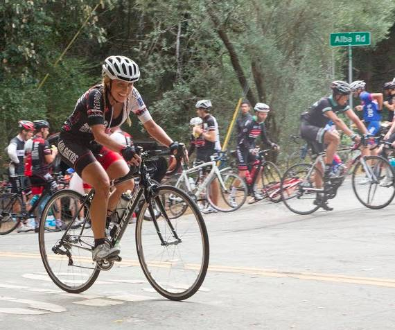

Low-Key Hillclimbs Aggregate Results:
Alba Road
generated Fri Nov 4 10:34:14 PDT 2016
|
|  |
| 2015 week 3: Jill Stone was part of a very strong LGBRC women's team (Scott Byer) |
Results are listed here from the Low-Key archives, sorted by time for each climb. Some years start and/or finish time differ slightly, such as
with Kings Mt Road where after 1995 the start moved from Entrance Way to Greer.
Results are ranked by time first, score second.
Score is calculated using a simple percent-of-median-speed
formula, with time adjustments for division. These scores will generally differ from those calculated in the results for that particular year, since
the scoring scheme has evolved. Tandems are split between 1998, when they were counted as single participants, and other years, when the individual
riders have been counted separately
Results for Men
| rank | time | score | rider | cat | team | year | week | code |
|---|
| 1 | 24:49 | 127.737 | Bill Laddish | 45's | Team CVC | 2015 | 3 | |
| 2 | 24:54 | 127.309 | Stefano Profumo | 35+ | Squadra SF | 2015 | 3 | |
| 3 | 25:05 | 132.420 | Justin Lucke | 35+ | LGBRC | 2009 | 8 | |
| 4 | 25:13 | 125.711 | Carl Nielson | 55+ | Sr's & Mr's of No Mercy | 2015 | 3 | |
| 5 | 25:19 | 125.214 | Jacob Berkman | 35+ | ThirstyBear p/b Akamai | 2015 | 3 | |
| 6 | 25:22 | 124.967 | Joseph Sullivan | 35+ | San Jose Bike Club | 2015 | 3 | |
| 7 | 25:33 | 124.070 | Chris Evans | 35+ | Stanford & Sons | 2015 | 3 | |
| 8 | 25:55 | 122.315 | David Collet | 45+ | Stanford & Sons | 2015 | 3 | |
| 9 | 25:59 | 127.833 | Carl Nielson | 45+ | Sr's & Mr's of No Mercy | 2009 | 8 | |
| 10 | 26:00 | 121.923 | Kirk Scheibelhut | Runner With A Bike | Sparklemotion | 2015 | 3 | |
| 11 | 26:05 | 127.343 | Tim Clark | 40+ | Metrigear | 2009 | 8 | |
| 12 | 26:09 | 127.018 | Greg McQuaid | 35+ | San Jose Bike Club | 2009 | 8 | |
| 13 | 26:43 | 118.653 | Brian Schuster | 2 | Squadra SF | 2015 | 3 | |
| 14 | 26:59 | 117.480 | Daniel Connelly | 3 | Low-Key | 2015 | 3 | |
| 15 | 27:02 | 122.868 | Jacob Berkman | | | 2009 | 8 | |
| 16 | 27:08 | 116.830 | Robert Easley | 45+ | Sr's & Mr's of No Mercy | 2015 | 3 | |
| 17 | 27:13 | 116.473 | Shahram Moatazedi | 40+ | LGBRC | 2015 | 3 | |
| 18 | 27:19 | 121.593 | Daniel Connelly | 40+ | Low-Key | 2009 | 8 | |
| 19 | 27:23 | 115.764 | Morgan Raines | 40+ | Bike Trip/Symantec | 2015 | 3 | |
| 20 | 27:39 | 120.128 | Geoff Drake | 50+ | Bike Trip/Symantec | 2009 | 8 | |
| 21 | 27:46 | 119.623 | Tom Gardin | 45+ | | 2009 | 8 | |
| 22 | 27:50 | 119.336 | Mark Edwards | 45+ | Bike Trip/Symantec | 2009 | 8 | |
| 23 | 27:54 | 113.620 | Stephen Lamm | 40+ | Google | 2015 | 3 | |
| 24 | 27:55 | 113.552 | Andy Crews | 45+ | Diablo | 2015 | 3 | |
| 25 | 28:06 | 112.811 | Joe Fant | 55+ | LGBRC | 2015 | 3 | |
| 26 | 28:11 | 117.854 | James Porter | 3 | Western Wheelers | 2009 | 8 | |
| 27 | 28:35 | 116.205 | Bill Davis | 25+ | Google | 2009 | 8 | |
| 28 | 28:45 | 115.531 | Andy Brisnehan | 50+ | Western Wheelers | 2009 | 8 | |
| 29 | 28:45 | 110.261 | Menko Johnson | 35+ | Pen Velo/Pomodoro | 2015 | 3 | |
| 30 | 28:46 | 115.464 | Shon Grabbe | 35+ | San Jose Bike Club | 2009 | 8 | |
| 31 | 28:50 | 109.942 | Evan Paull | 30+ | loves pancakes | 2015 | 3 | |
| 32 | 28:55 | 109.625 | Paul Castonguay | 45+ | Low-Key | 2015 | 3 | |
| 33 | 28:59 | 109.373 | Rich Hill | 50+ | LGBRC | 2015 | 3 | |
| 34 | 29:03 | 114.338 | Rune Dahl | 45+ | Western Wheelers | 2009 | 8 | |
| 35 | 29:18 | 108.191 | Todd Studenicka | 45+ | San Jose Bike Club | 2015 | 3 | |
| 36 | 29:20 | 108.068 | Nils Tikkanen | Thankful | Google | 2015 | 3 | |
| 37 | 29:21 | 108.007 | Goeric Daeninck | 35+ | Paradise Garage | 2015 | 3 | |
| 38 | 29:23 | 107.884 | Martin Schubert | 30+ | Google | 2015 | 3 | |
| 39 | 29:32 | 112.467 | Menko Johnson | 35+ | Pen Velo/Pomodoro | 2009 | 8 | |
| 40 | 29:42 | 111.836 | Julian Sunn | 20+ | Santa Cruz Endurance | 2009 | 8 | |
| 41 | 29:49 | 111.398 | Bruce Gardner | 35+ | Sr's & Mr's of No Mercy | 2009 | 8 | |
| 42 | 29:49 | 106.316 | Joe Karbowski | 35+ | Team Joe Karbowski | 2015 | 3 | |
| 43 | 29:53 | 106.079 | Tom Dillon | 45+ | Pen Velo/Pomodoro | 2015 | 3 | |
| 44 | 29:56 | 110.964 | Matt Wocasek | 3 | Bike Trip/Symantec | 2009 | 8 | |
| 45 | 30:06 | 105.316 | Stuart Taylor | 40+ | Tandem Team Taylor | 2015 | 3 | |
| 46 | 30:16 | 109.742 | Tim Sawyer | 45+ | Bike Trip/Symantec | 2009 | 8 | |
| 47 | 30:17 | 104.678 | Daryl Spano | 45+ | San Jose Bike Club | 2015 | 3 | |
| 48 | 30:26 | 109.141 | Michael Simos | 35+ | LGBRC | 2009 | 8 | |
| 49 | 30:43 | 108.134 | Klaus Fleischmann | 40+ | | 2009 | 8 | |
| 50 | 30:44 | 103.145 | Joseph Junio | Havefun | SOLO | 2015 | 3 | |
| 51 | 30:49 | 102.866 | Michael Reynolds | Hopefully Fast | LGBRC | 2015 | 3 | |
| 52 | 31:01 | 107.088 | Benoit Pelczar | 35+ | Bike Trip/Symantec | 2009 | 8 | |
| 52 | 31:01 | 107.088 | Christian Paquet | 50+ | Doogie | 2009 | 8 | |
| 54 | 31:05 | 101.984 | Chris Mickelsen | 55+ | Pen Velo/Pomodoro | 2015 | 3 | |
| 55 | 31:08 | 106.687 | Fred Egley | 45+ | Dos Egley's | 2009 | 8 | |
| 56 | 31:40 | 100.105 | Val Minaev | 35+ | LGBRC | 2015 | 3 | |
| 57 | 31:44 | 99.895 | Zachary Hilton | 35+ Cat 4 | Sr's & Mr's of No Mercy | 2015 | 3 | |
| 58 | 31:52 | 104.232 | Peter Mehlitz | 45+ | | 2009 | 8 | |
| 59 | 31:52 | 99.477 | Phil Lovaglio | 55+ | San Jose Bike Club | 2015 | 3 | |
| 60 | 31:53 | 99.425 | Robert Lojek | 5-Ish | Google | 2015 | 3 | |
| 61 | 32:02 | 98.959 | Steve Johnson | 50+ | LGBRC | 2015 | 3 | |
| 62 | 32:05 | 103.528 | Brian Lucido | 30+ | Sr's & Mr's of No Mercy | 2009 | 8 | |
| 63 | 32:06 | 103.474 | Kevin Comerford | Commuter | | 2009 | 8 | |
| 64 | 32:10 | 98.549 | Will Von Kaenel | 55+ | LGBRC | 2015 | 3 | |
| 65 | 32:17 | 98.193 | Geoffrey Bower | 30+ | Dash | 2015 | 3 | |
| 66 | 32:19 | 102.781 | Scott Martin | 50+ | Bike Trip/Symantec | 2009 | 8 | |
| 67 | 32:34 | 97.339 | Doug Reynolds | 60+ | NightRiders | 2015 | 3 | |
| 68 | 32:35 | 97.289 | Jeremy Scott | 45+ | LGBRC | 2015 | 3 | |
| 69 | 32:36 | 101.887 | Q.P. Liu | 40+ | | 2009 | 8 | |
| 70 | 32:38 | 101.783 | Bill Preucel | 45+ | Sr's & Mr's of No Mercy | 2009 | 8 | |
| 71 | 32:43 | 96.893 | Scott Martin | 55+ | Team Spokesman | 2015 | 3 | |
| 72 | 32:51 | 101.112 | Dennis Pederson | 45+ | Bike Trip/Symantec | 2009 | 8 | |
| 73 | 32:55 | 100.907 | Rick Ferrell | 50+ | | 2009 | 8 | |
| 74 | 32:58 | 96.158 | Ryan Powell | 35+ | Team Joe Karbowski | 2015 | 3 | |
| 75 | 32:59 | 96.109 | George Janour | 45+ | Spokesmen Santa Cruz | 2015 | 3 | |
| 76 | 33:01 | 100.602 | Vince Cummings | | | 2009 | 8 | |
| 77 | 33:04 | 100.449 | Neal Herman | 50+ | Spike the Wonder Dog | 2009 | 8 | |
| 78 | 33:06 | 100.348 | Andre Swart | Junior | Ryro | 2009 | 8 | |
| 79 | 33:19 | 99.696 | Matt Beadon | 30+ | | 2009 | 8 | |
| 80 | 33:28 | 94.721 | Robert Doudell | 45+ | LGBRC | 2015 | 3 | |
| 81 | 33:37 | 94.298 | Frank Paysen | 55+ | Chain Reaction | 2015 | 3 | |
| 82 | 33:39 | 98.708 | David Vrane | 45+ | SLACer | 2009 | 8 | |
| 83 | 33:43 | 98.513 | Phil Dubach | 35+ | Western Wheelers | 2009 | 8 | |
| 84 | 33:47 | 98.319 | Gregory Fuoco | | Democrats | 2009 | 8 | |
| 85 | 33:56 | 93.418 | Bernardo Tapia | 40+ | Stanford cycling | 2015 | 3 | |
| 86 | 33:57 | 97.836 | Shance Ordell | 35+ | Western Wheelers | 2009 | 8 | |
| 87 | 34:18 | 92.420 | Jim Williams | 65+ | San Jose Bike Club | 2015 | 3 | |
| 88 | 34:22 | 96.650 | James Dudley | | | 2009 | 8 | |
| 89 | 34:24 | 96.556 | George Junour | | Santa Cruz | 2009 | 8 | |
| 90 | 34:25 | 92.107 | Andrew Fitzhugh | 50+ | Stanford cycling | 2015 | 3 | |
| 91 | 35:04 | 94.720 | Jeff Shute | 30+ | Google | 2009 | 8 | |
| 92 | 35:09 | 94.496 | Stephen Fong | 40+ | San Jose Bike Club | 2009 | 8 | |
| 93 | 35:09 | 90.185 | Thomas Preisler | 60+ | LGBRC | 2015 | 3 | |
| 94 | 35:12 | 94.362 | Nic Brummell | 45+ | Atlas | 2009 | 8 | |
| 95 | 35:23 | 89.590 | Hui Chen | 45+ | Team Cycling Panda | 2015 | 3 | |
| 96 | 35:24 | 89.548 | Christoph Erben | 45+ | LGBRC | 2015 | 3 | |
| 97 | 35:32 | 93.476 | Chris Toshok | 5 | RAMROD | 2009 | 8 | |
| 98 | 35:56 | 88.219 | Scott Violet | 40+ | Google | 2015 | 3 | |
| 99 | 35:58 | 92.350 | Barry Burr | 50+ | Two legs to stand on | 2009 | 8 | |
| 100 | 36:00 | 88.056 | Han Wen | 45+ | Grumpy Old Men (GOM) | 2015 | 3 | |
| 101 | 36:03 | 87.933 | Tony Amadio | 30+ | Clagnuts | 2015 | 3 | |
| 102 | 36:11 | 91.797 | Mark Powers | 50+ | Pen Velo/Pomodoro | 2009 | 8 | |
| 103 | 36:18 | 87.328 | Fred Egley | 50+ | Clagnuts | 2015 | 3 | |
| 104 | 36:33 | 86.731 | Nigel Allen | 40+ | Oso | 2015 | 3 | |
| 105 | 36:46 | 90.341 | William Von Kaenel | 50+ | LGBRC | 2009 | 8 | |
| 106 | 36:54 | 85.908 | Larry Klein | 55+ | Grumpy Old Men (GOM) | 2015 | 3 | |
| 107 | 37:08 | 85.368 | Rupesh Kapoor | Slightly Old | Google | 2015 | 3 | |
| 108 | 37:12 | 89.288 | George Lee | | | 2009 | 8 | |
| 109 | 37:12 | 85.215 | Shane Ruggieri | 45+ | LGBRC | 2015 | 3 | |
| 110 | 37:38 | 88.260 | John Kastel | 45+ | Death Valley | 2009 | 8 | |
| 111 | 38:00 | 87.409 | Han Wen | 40+ | | 2009 | 8 | |
| 112 | 38:04 | 83.275 | Brian Ward | 40+ | Zombie Raccoon | 2015 | 3 | |
| 113 | 38:17 | 82.804 | Carl Werner | 50+ | LGBRC | 2015 | 3 | |
| 114 | 39:02 | 85.095 | Thomas Preisler | 50+ | LGBRC | 2009 | 8 | |
| 115 | 39:24 | 84.303 | Mike Ahern | 40+ | LGBRC | 2009 | 8 | |
| 116 | 39:40 | 83.736 | Todd Bryan | 40+ | Western Wheelers | 2009 | 8 | |
| 117 | 39:43 | 83.631 | Jeremy Page | 35+/Fixed | Santa Cruz Endurance | 2009 | 8 | F |
| 118 | 39:47 | 83.490 | Gary Swart | Senior | Ryro | 2009 | 8 | |
| 119 | 40:17 | 82.454 | Richard Contreras | 50+ | | 2009 | 8 | |
| 120 | 40:20 | 82.352 | Kley Cardona | 45+ | ACTC | 2009 | 8 | |
| 121 | 40:36 | 78.079 | Eric Nehrlich | Slow-Poke | Google | 2015 | 3 | |
| 122 | 40:44 | 81.543 | Jim Tappan | 50+ | Self | 2009 | 8 | |
| 123 | 40:49 | 81.377 | Janet Wagner | Tandem | Sr's & Mr's of No Mercy | 2009 | 8 | |
| 124 | 41:18 | 80.424 | Miguel Angel Alvarez | 40+ | PROJOB | 2009 | 8 | |
| 125 | 42:14 | 78.647 | Christopher Olson | 5 | Google | 2009 | 8 | |
| 126 | 42:48 | 74.065 | John Bleau | 45+ | LGBRC | 2015 | 3 | |
| 127 | 42:59 | 73.750 | Gregory P. Smith | Finisher | Low-Key | 2015 | 3 | |
| 128 | 43:04 | 77.125 | Bob Corman | 50+ | Spike the Wonder Dog | 2009 | 8 | |
| 129 | 43:14 | 76.828 | Jeroem Meiier | 35+ | | 2009 | 8 | |
| 130 | 43:15 | 76.798 | Chris Chang | 45+ | Old & slow | 2009 | 8 | |
| 131 | 44:08 | 75.261 | Joseph Maurer | 60+ | SF Randonneurs | 2009 | 8 | |
| 132 | 44:13 | 75.119 | Giles Douglas | 35+ | Google | 2009 | 8 | |
| 133 | 44:26 | 71.343 | David Salazar | 25+ | Stanford cycling | 2015 | 3 | |
| 134 | 45:34 | 72.894 | John Conklin | 40+ | | 2009 | 8 | |
| 135 | 46:10 | 71.946 | Wink Saville | 60+ | Google | 2009 | 8 | |
| 136 | 56:28 | 58.823 | Doug Simpkinson | 35+ | Alto Velo | 2009 | 8 | |
| 137 | 65:45 | 50.518 | Joel Guerra | Junior 13 | | 2009 | 8 | |
F : Fixed or 1-speed
Results for Female Runner
| rank | time | score | rider | cat | team | year | week | code |
|---|
| 1 | 41:17 | 92.625 | Lisa Penzel | 50+ | Low-Key | 2015 | 3 | |
Results for Hybrid Electric
| rank | time | score | rider | cat | team | year | week | code |
|---|
| 1 | 18:36 | 103.763 | Bill Bushnell | Hybrid | Low-Key | 2009 | 8 | |
| 2 | 33:48 | 54.496 | Carol Ordemann | Hybrid-Electric | Stanford & Sons | 2015 | 3 | |
Results for Women
| rank | time | score | rider | cat | team | year | week | code |
|---|
| 1 | 33:12 | 115.177 | Christina Davis | 4 | LGBRC | 2015 | 3 | |
| 2 | 34:02 | 112.357 | Jill Stone | 4 | LGBRC | 2015 | 3 | |
| 3 | 34:24 | 111.159 | Lynn Sestak | 55+ | LGBRC | 2015 | 3 | |
| 4 | 34:36 | 115.800 | Christy Cowley | 40+ | Sr's & Mr's of No Mercy | 2009 | 8 | |
| 5 | 34:41 | 115.521 | Holly Harris | 40+ | Sr's & Mr's of No Mercy | 2009 | 8 | |
| 6 | 35:19 | 113.450 | Janet Martinez/Gardner | 40+ | Sr's & Mr's of No Mercy | 2009 | 8 | |
| 7 | 35:31 | 107.665 | Bonnie Denoyer | 45+ | LGBRC | 2015 | 3 | |
| 8 | 36:58 | 108.386 | Laura Hipp | | Western Wheelers | 2009 | 8 | |
| 9 | 40:04 | 100.000 | Laura Egley | 45+ | Dos Egley's | 2009 | 8 | |
| 10 | 46:41 | 85.826 | Karis McFarlane | Commuter | Silicon Valley Triathlon | 2009 | 8 | |
| 11 | 47:17 | 80.872 | Dan Zhang | 35+ | Team Cycling Panda | 2015 | 3 | |
| 12 | 48:31 | 82.583 | Lisa Emmerich | 45+ | Team Rwanda | 2009 | 8 | |
Results for Tandem
| rank | time | score | rider | cat | team | year | week | code |
|---|
| 1 | 58:47 | 56.505 | Eileen Callahan | Tandem/5 And Under | | 2009 | 8 | |
| 1 | 58:47 | 56.505 | Patrick Callahan | 40+ | Western Wheelers | 2009 | 8 | |
Results for Male Runner
| rank | time | score | rider | cat | team | year | week | code |
|---|
| 1 | 29:41 | 111.899 | Gary Gellin | Runner | Sr's & Mr's of No Mercy | 2009 | 8 | R |
| 2 | 40:53 | 77.538 | John Burton | 40+ | Quicksilver Running Club | 2015 | 3 | |
R : runner